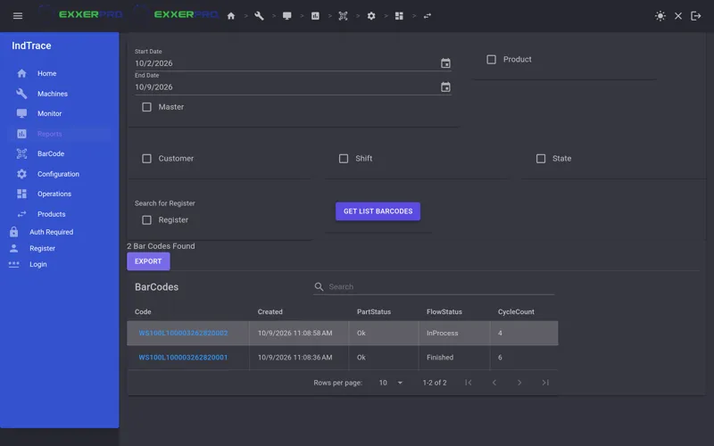

Cada pieza, cada estación, registrada.
IndTrace registra lo que le pasa a cada pieza serializada mientras recorre una línea de producción conectada a PLC, y revisa cada llegada contra la ruta de la pieza. Sus máquinas y operadores siguen al mando. IndTrace guarda el historial y señala lo que no debió ocurrir.
- WS100Impresión de etiqueta
- WS200Ensamble
- WS300Prueba de fuga
- WS400Inspección por visión
- WS500Empaque final
La pieza L1AL100003 se reporta en cada estación. WS200 y WS300 son pasos siguientes válidos, así que IndTrace los registra. Cuando la pieza llega a WS500 sin haber pasado por WS400, IndTrace registra la llegada como rechazada y se lo informa a la línea.
Rastrea. No controla.
Muchos problemas de trazabilidad vienen de sistemas que intentan manejar la línea. IndTrace no lo hace. El equipo decide a dónde va una pieza; IndTrace determina si ese movimiento fue válido y guarda la evidencia.
La línea decide
- El PLC y el operador mueven la pieza y ejecutan el proceso.
- Cada estación evalúa su propio ciclo: pasa o no pasa.
- Cuando una pieza llega a una estación, el PLC la reporta.
IndTrace registra y valida
- Guarda el código de barras, la estación, el resultado del ciclo, los valores de proceso y la hora.
- Revisa la llegada contra la ruta del producto: ¿esta estación es un paso siguiente válido?
- Responde al PLC con un acuse y un resultado de validación.
Nunca envía una orden de "ir a la máquina X".
Qué hace, operación por operación
| Op | Qué hace IndTrace | Dónde lo ve |
|---|---|---|
| 010 | Identificar la piezaRegistra un código de barras principal por pieza. Las etiquetas de componentes y adyacentes se guardan con él, así que la genealogía es una consulta, no una búsqueda. | BarCode, Reports |
| 020 | Validar cada llegadaRevisa cada llegada reportada contra los sucesores válidos en la ruta del producto y contra el resultado de la estación anterior. | Monitor, Results |
| 030 | Registrar el cicloGuarda los resultados de ciclo, el estado OK y NOK de la pieza, el estado de flujo y las variables de proceso que reporta cada estación. | Reports |
| 040 | Configurar la rutaProductos, flujos, máquinas y PLC son datos que se editan en las pantallas de configuración, no código. | Configuration |
| 050 | Ver la línea en vivoEl estado de las estaciones, las piezas y los resultados llegan al navegador por SignalR conforme se reportan. | Dashboard |
| 060 | Buscar y exportar el historialFiltre por fecha, producto, cliente, turno o estado, abra el historial completo de una pieza y expórtelo. | Reports |
Las pantallas
Capturadas de la edición comunitaria con una base de datos de demostración. Todas las empresas, productos y números de parte que aparecen son ficticios.
Recorridos en video
Estamos grabando videos cortos de la edición comunitaria. Aparecerán aquí.
El recorrido de una pieza
Una pieza recorre una línea simulada y cada llegada se valida en el tablero.
Definir una ruta
Configure un producto, sus estaciones y el orden válido entre ellas.

PróximamenteRastrear una pieza
Parta de un código de barras y encuentre cada estación, resultado y valor que registró.
Cómo está construido
Una solución hexagonal en .NET 10. Los drivers de cada fabricante quedan detrás de un contrato de dispositivos pequeño, así que el núcleo nunca depende de una marca de PLC.
Edición comunitaria
Incluye un controlador de PLC simulado en memoria, para correr todo el sistema sin hardware.
Drivers intercambiables
En la edición comercial, los drivers de Siemens S7 y Cognex DataMan implementan el mismo contrato.
Dos despachadores
El tráfico de PLC y las peticiones de la interfaz pasan por despachadores CQRS separados, cada uno con su propio contexto.
Hecho para piso de planta
Un registro equivocado puede detener una línea o dejar salir una pieza mala, así que cada cambio pasa por un control estricto.
Primeros pasos
Instale el SDK de .NET 10, clone el repositorio y compile. La compilación trata las advertencias como errores.
git clone https://github.com/Exxerpro/IndTrace.git cd IndTrace dotnet build Src/IndTrace.slnEjecute una suite de pruebas. Las suites usan Microsoft Testing Platform, así que use
dotnet run.dotnet run --project Src/Tests/Core/Aggregation.BoundedTests/Application.AgregationTests.csprojConfigure los hosts con un SQL Server e inícielos. Una guía paso a paso para una base de datos vacía y una línea simulada está en preparación en el issue #1.